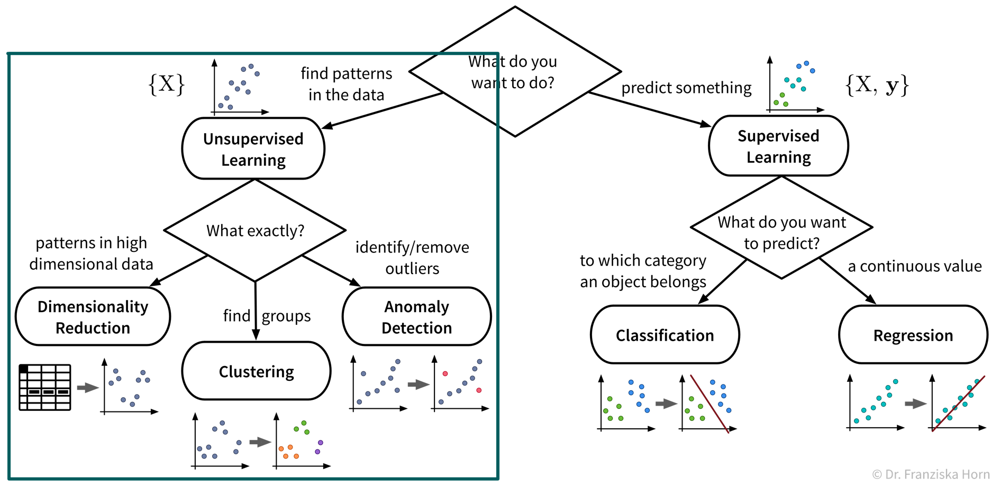
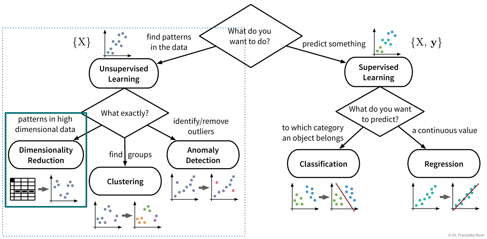
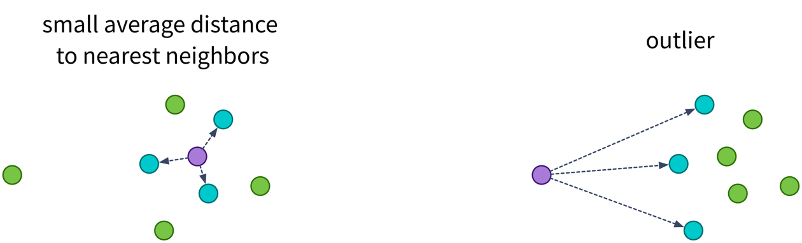

Unsupervised Learning
The first algorithms we look at in more detail are from the area of unsupervised learning:

While the subfields of unsupervised learning all include lots of different algorithms that can be used for the respective purpose, we’ll always just examine a few example algorithms with different underlying ideas in more detail. But feel free to, e.g., have a look at the sklearn user guide for more information about other methods.
Dimensionality Reduction
The first subfield of unsupervised learning that we look at is dimensionality reduction:

Goal: Reduce the number of features without loosing relevant information.
Advantages:
- Reduced data needs less memory (usually not that important anymore today)
- Noise reduction (by focusing on the most relevant signals)
- Create a visualization of the dataset (what we are mostly using these algorithms for)
Example: Embed images of hand written digits in 2 dimensions:


The two plots show the results, i.e., the 2-dimensional representation of the dataset created with two different dimensionality reduction algorithms, PCA and t-SNE. Each point or thumbnail in the plot represents one data point (i.e., one image) and the colors, numbers, and example images were added after reducing the dimensionality so the plot is easier to interpret.
There is no right or wrong way to represent the data in 2D – it’s an unsupervised learning problem, which by definition has no ground truth answer. The algorithms arrive at two very different solutions, since they follow different strategies and have a different definition of what it means to preserve the relevant information. While PCA created a plot that preserves the global relationship between the samples, t-SNE arranged the samples in localized clusters.
The remarkable thing here is that these methods did not know about the fact that the images displayed different, distinct digits (i.e., they did not use the label information), yet t-SNE grouped images showing the same number closer together. From such a plot we can already see that if we were to solve the corresponding classification problem (i.e., predict which digit is shown in an image), this task should be fairly easy, since even an unsupervised learning algorithm that did not use the label information showed that images displaying the same number are very similar to each other and can easily be distinguished from images showing different numbers. Or conversely, if our classification model performed poorly on this task, we would know that we have a bug somewhere, since apparently the relevant information is present in the features to solve this task.
Please note that even though t-SNE seems to create clusters here, it is not a clustering algorithm. As a dimensionality reduction algorithm, t-SNE produces a set of new 2D coordinates for our samples and when plotting the samples at these coordinates, they happen to be arranged in clusters. However, a clustering algorithm instead outputs cluster indices, that state which samples were assigned to the same group (which could then be used to color the points in the 2D coordinate plot).
Principal Component Analysis (PCA)
Useful for:
- General dimensionality reduction & noise reduction.
⇒ The transformed data is sometimes used as input for other algorithms instead of the original features.
Main idea:
Compute the eigendecomposition of the dataset’s covariance matrix, a symmetric matrix of size \(d \times d\) (with d = number of original input features), which states how strongly any two features co-vary, i.e., how related they are, similar to the linear correlation between two features.
By computing the eigenvalues and -vectors of this matrix, the main directions of variance in the data are identified. These are the principle components and can be expressed as linear combinations of the original features. We then reorient the data along these new axis.
Have a look at this video for a more detailed explanation.

from sklearn.decomposition import PCAImportant Parameters:
n_components: New dimensionality of data; this can be as many as the original features (or the rank of the feature matrix).
Pros:
Linear algebra based: solution is a global optima, i.e., when we compute PCA multiple times on the same dataset we’ll always get the same results.
Know how much information is retained in the low dimensional representation; stored in the attributes
explained_variance_ratio_orsingular_values_/eigenvalues_(= eigenvalues of the respective PCs):
The principle components are always ordered by the magnitude of their corresponding eigenvalues (largest first);
When using the first k components with eigenvalues \(\lambda_i\), the amount of variance that is preserved is: \(\frac{\sum_{i=1}^k \lambda_i}{\sum_{i=1}^d \lambda_i}\).NoteIf the intrinsic dimensionality of the dataset is lower than the original number features, e.g., because some features were strongly correlated, then the last few eigenvalues will be zeros. You can also plot the eigenvalue spectrum, i.e., the eigenvalues ordered by their magnitude, to see how many dimensions you might want to keep, i.e., where this curve starts to flatten out.
Careful:
Computationally expensive for many (> 10k) features.
TipIf you have fewer data points than features, consider using Kernel PCA instead: This variant of the PCA algorithm computes the eigendecomposition of a similarity matrix, which is \(n \times n\) (with n = number of data points), i.e., when n < d this matrix will be smaller than the covariance matrix and therefore computing its eigendecomposition will be faster.
Outliers can heavily skew the results, because a few points away from the center can introduce a large variance in that direction.
t-SNE
Useful for:
- Visualizing data in 2D – but please do not use the transformed data as input for other algorithms.
Main idea:
Randomly initialize the points in 2D and move them around until their distances in 2D match the original distances in the high dimensional input space, i.e., until the points that were similar to each other in the original high dimensional space are located close together in the new 2D map of the dataset.
→ Have a look at the animations in this great blog article to see t-SNE in action!
from sklearn.manifold import TSNEImportant Parameters:
perplexity: Roughly: how many nearest neighbors a point is expected to have. Have a look at the corresponding section in the blog article linked above for an example. However, what an appropriate value for this parameter is depends on the size and diversity of the dataset, e.g., if a dataset consists of 1000 images with 10 classes, then a perplexity of 5 might be a reasonable choice, while for a dataset with 1 million samples, 500 could be a better value.
The original paper says values up to 50 work well, but in 2003 “big data” also wasn’t a buzzword yet ;-)metric: How to compute the distances in the original high dimensional input space, which tells the model which points should be close together in the 2D map.
Pros:
- Very nice visualizations.
Careful:
- Algorithm can get stuck in a local optimum, e.g., with some points trapped between clusters.
- Selection of distance metric for heterogeneous data ⇒ normalize!
Outlier / Anomaly Detection
Next up on our list of ML tools is anomaly or outlier detection:
Useful for:
- Detecting anomalies for monitoring purposes, e.g., machine failures or fraudulent credit card transactions.
- Removing outliers from the dataset to improve the performance of other algorithms.
Things to consider when trying to remove outliers or detect anomalies:
- Does the dataset consist of independent data points or time series data with dependencies?
- Are you trying to detect
- outliers in individual dimensions? For example, in time series data we might not see a failure in all sensors simultaneously, but only one sensor acts up spontaneously, i.e., shows a value very different from the previous time point, which would be enough to rule this time point an anomaly irrespective of the values of the other sensors.
- multidimensional outlier patterns? Individual feature values of independent data points might not seem anomalous by themselves, only when considered in combination with the data point’s other feature values. For example, a 35\(m^2\) apartment could be a nice studio, but if this apartment supposedly has 5 bedrooms, then something is off.
- Are you expecting a few individual outliers or clusters of outliers? The latter is especially common in time series data, where, e.g., a machine might experience an issue for several minutes or even hours before the signals look normal again. Clusters of outliers are more tricky to detect, especially if the data also contains other ‘legitimate’ clusters of normal points. Subject matter expertise is key here!
- Do you have any labels available? While we might not know what the different kinds of (future) anomalies look like, maybe we do know what normal data points look like, which is important information that we can use to check how far new points deviate from these normal points, also called novelty detection.
Know your data – are missing values marked as NaNs (“Not a Number”) or set to some ‘unreasonable’ high or low value?
Removing outlier samples from a dataset is often a necessary cleaning step, e.g., to obtain better prediction models. However, we should always be able to explain why we removed these points, as they could also be interesting edge cases.
Try to remove as many outliers as possible with manually crafted rules (e.g., “when this sensor is 0, the machine is off and the points can be disregarded”), especially when the dataset contains clusters of outliers, which are harder to detect with data-driven methods.
Please note that some of the data points a prediction model encounters in production might be outliers as well. Therefore, new data needs to be screened for outliers as well, as otherwise these points would force the model to extrapolate beyond the training domain.
Different methods for outlier/anomaly detection
There is no one-size-fits-all solution, but depending on the characteristics of the dataset you might want to experiment with some of these approaches:
- Detect outliers in individual feature dimensions:
- Compute the interquartile range (IQR), i.e., the difference between the 75th and 25th percentiles of the data, as \(\text{IQR} = Q_3 - Q_1\), where \(Q_1\) and \(Q_3\) are the lower and upper quartiles. All data points with values outside of the range \([Q_1-1.5\cdot \text{IQR},\; Q_3+1.5\cdot \text{IQR}]\) are considered outliers.
- Detect multidimensional outlier patterns, especially in datasets with independent data points (see also sklearn user guide):
- \(\gamma\)-index (see below)
- Local Outlier Factor (from
sklearn; similar to the \(\gamma\)-index) - Isolation Forest (from
sklearn; read about decision trees and random forests first) - One-class SVM (from
sklearn; read about kernel methods and normal SVMs first) - DBSCAN (a clustering algorithm that allows for noise, which would be considered outliers)
- Compare actual data points to denoised samples or predicted values:
- Use (kernel) PCA or an auto-encoder neural network architecture to first compress a sample and then reconstruct it in order to remove noise. If the denoised data point deviates a lot from the original sample, it is probably an anomaly.
- For time series data: model the expected course of an individual time series, e.g., using a moving window average or an ARIMA model (see section on time series forecasting for more details), and then compare how much a time point deviates from this predicted value.
- Get creative: you know your data best – define rules and custom anomaly KPIs based on your domain knowledge, e.g., set thresholds for what would be considered unrealistic feature values etc.
\(\gamma\)-index
Harmeling, Stefan, et al. “From outliers to prototypes: ordering data.” Neurocomputing 69.13-15 (2006): 1608-1618.
Main idea:
Compute the average distance of a point to its k nearest neighbors:
→ Points with a large average distance are more likely to be outliers.
⇒ Set a threshold for the average distance when a point is considered an outlier.

import numpy as np
from sklearn.metrics import pairwise_distances
def gammaidx(X, k):
"""
Inputs:
- X [np.array]: n samples x d features input matrix
- k [int]: number of nearest neighbors to consider
Returns:
- gamma_index [np.array]: vector of length n with gamma index for each sample
"""
# compute n x n Euclidean distance matrix
D = pairwise_distances(X, metric='euclidean')
# sort the entries of each row, such that the 1st column is 0 (distance of point to itself),
# the following columns are distances to the closest nearest neighbors (i.e., smallest values first)
Ds = np.sort(D, axis=1)
# compute mean distance to the k nearest neighbors of every point
gamma_index = np.mean(Ds[:, 1:(k+1)], axis=1)
return gamma_index
# or more efficiantly with the NearestNeighbors class
from sklearn.neighbors import NearestNeighbors
def gammaidx_fast(X, k):
"""
Inputs:
- X [np.array]: n samples x d features input matrix
- k [int]: number of nearest neighbors to consider
Returns:
- gamma_index [np.array]: vector of length n with gamma index for each sample
"""
# initialize and fit nearest neighbors search
nn = NearestNeighbors(n_neighbors=k).fit(X)
# compute mean distance to the k nearest neighbors of every point (ignoring the point itself)
# (nn.kneighbors returns a tuple of distances and indices of nearest neighbors)
gamma_index = np.mean(nn.kneighbors()[0], axis=1) # for new points: nn.kneighbors(X_test)
return gamma_indexPros:
- Conceptually very simple and easy to interpret.
Careful:
- Computationally expensive for large datasets (distance matrix: \(\mathcal{O}(n^2)\)) → compute distances to a random subsample of the dataset or to a smaller set of known non-anomalous points instead.
- Normalize heterogeneous datasets before computing distances!
- Know your data: does the dataset contain larger clusters of outliers? → k needs to be large enough such that a tight cluster of outliers is not mistaken as prototypical data points.
Extension for time series data: don’t identify the k nearest neighbors of a sample based on the distance of the data points in the feature space, but take the neighboring time points instead.
You’ve found an outlier – now what?
Clustering
The last category of unsupervised learning algorithms is clustering:
Useful for:
- Identifying naturally occurring groups in the data (e.g., for customer segmentation).
There exist quite a lot of different clustering algorithms and we’ll only present two with different ideas here.
When you look at the linked sklearn examples, please note that even though other clustering algorithms might seem to perform very well on fancy toy datasets, data in reality is seldom arranged in two concentric circles, and on real-world datasets the k-means clustering algorithm is often a robust choice.
k-means clustering
Main idea:
- Randomly place k cluster centers (where k is a hyperparameter set by the user);
- Assign each data point to its closest cluster center;
- Update cluster centers as the mean of the assigned data points;
- Repeat steps 2-3 until convergence.

from sklearn.cluster import KMeansImportant Parameters:
n_clusters: How many clusters (k) the algorithm should find.
Pros:
- Fast.
- Usually good results on real world datasets.
Careful:
- Depends on random initialization → solution is local optimum, but usually not problematic in practice due to multiple restarts.
- Assumes spherical clusters.
- Need to guess the number of clusters. But this can be done with a heuristic and sometimes we also need to find a fixed number of clusters, e.g., if we only have the budged for three different marketing initiatives, we want to assign our customers to exactly three groups.
DBSCAN
Main idea:
Find ‘core samples’ in dense areas of the data and then expand the clusters by iteratively including points with a distance < eps.

from sklearn.cluster import DBSCANImportant Parameters:
eps: Maximum neighborhood distance of two samples.metric: How to compute the distance in the input feature space.
Pros:
- Allows for noise ⇒ can also be used to detect outliers.
- No need to guess the number of clusters.
Careful:
- Very dependent on distance measure: may be tricky to get good results for heterogeneous data even after normalization (but: try on text data).
→ Also check out the hdbscan library!